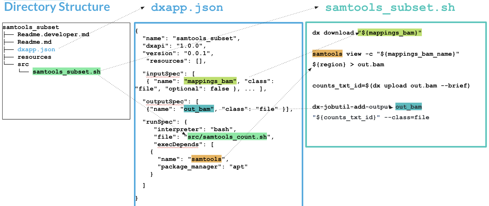

9 Building Apps
Now that we’ve learned about running apps using dx run and about what we can do with JSON, we can now tackle building our own apps on the platform.
9.1 What is an Applet/App?
Both applets and apps are executables that can be run on the DNAnexus platform. These executables might be well known bioinformatics software (such as samtools or PLINK), or they can also be a web app, such as a Plotly Dash app or a Shiny App. One example of this is the LocusZoom app, which takes a GWAS result file as input and makes an explorable visualization of the results.
9.2 The Applet Build Process
The applet build process is below (?fig-build)
::: :::
In Short:
A. Build Applet Skeleton using dx-app-wizard. Specify inputs and outputs. B. Add more details to Applet skeleton, including software environment and shell script. C. Build applet in your project using dx build.
9.3 The Applet Specification
A minimal applet on the platform needs the following:
- An binary executable, or a Docker image that contains the software we want to run.
- A JSON document (
dxapp.json) that contains the input/output specifications, the instance specification, and the source of the software - A script (in either bash or python) that executes the software on the inputs, and contains instructions for registering outputs.
Applets have a special structure, as you can see below. When you create them via the dx-app-wizard (a dx-toolkit utility), they will have the following directory structure (Figure 9.1):
└── my_app
├── Readme.developer.md
├── Readme.md
├── dxapp.json **
├── resources
├── src
│ └── my_app.sh **
└── testdxapp.json and src/my_app) are the bare minimum needed for an app. Generated automatically when you run dx-app-wizard.9.4 Visualizing the Pieces of an App

inputSpec and outputSpec specifications in dxapp.json with inputs and outputs used in samtools_subset.shIn Figure 9.2, we can see the multiple parts of the app. In short, we will need to decide on our inputs and outputs and their required data types.
That means when we specify our app we need to do the following things:
- Specify a software environment by either including an executable or using a Docker Image
- Specify both inputs and outputs and their datatypes in
dxapp.json - Process the inputs from
dxapp.jsonin our shell script to generate outputs. - In our shell script, upload output files and register as outputs
9.5 Part A: Jumpstarting our app using dx-app-wizard
When we call dx-app-wizard, we’ll get an interactive wizard that will help us specify the basics of our app. Specifically, it will let us specify inputs, outputs, and options such as instance type.
We can run dx-app-wizard on the command line:
$ dx-app-wizard
DNAnexus App Wizard, API v1.0.0
[...]
The name of your app must be unique on the DNAnexus platform. After creating your app for the
first time, you will be able to publish new versions using the same app name. App names are
restricted to alphanumeric characters (a-z, A-Z, 0-9), and the characters ".", "\_", and "-".
1App Name: samtools_subset
The title, if provided, is what is shown as the name of your app on the website. It can be
any valid UTF-8 string.
2Title []: Samtools Subset
The summary of your app is a short phrase or one-line description of what your app does. It
can be any UTF-8 human-readable string.
3Summary []: Subsets a bam file.
You can publish multiple versions of your app, and the version of your app is a string with
which to tag a particular version. We encourage the use of Semantic Versioning for labeling your
apps (see http://semver.org/ for more details).
4Version [0.0.1]:- 1
- Unique applet name here.
- 2
- Human readable name here.
- 3
- Description of what the applet does
- 4
- Put a version number here.
9.5.1 Input Specification in dx-app-wizard
Here’s a walkthrough of setting up inputs for an app:
Input Specification
You will now be prompted for each input parameter to your app. Each parameter should have a unique
name that uses only the underscore "_" and alphanumeric characters, and does not start with a
number.
11st input name (<ENTER> to finish): mappings_bam
2Label (optional human-readable name) []: BAM file
Your input parameter must be of one of the following classes:
applet array:file array:record file int
array:applet array:float array:string float record
array:boolean array:int boolean hash string
3Choose a class (<TAB> twice for choices): file
4This is an optional parameter [y/n]: n
2nd input name (<ENTER> to finish): mappings_bai
Label (optional human-readable name) []: Bam Index file
Choose a class (<TAB> twice for choices): file
This is an optional parameter [y/n]: n
3rd input name (<ENTER> to finish): region
Label (optional human-readable name) []:
Choose a class (<TAB> twice for choices): string
This is an optional parameter [y/n]: n
54th input name (<ENTER> to finish):- 1
- Input name
- 2
- Human readable name
- 3
-
Use the
fileclass as input type - 4
- Optional parameter?
- 5
-
Hit
when done with inputs
9.5.2 Output Specification
We can fill the output specification similarly:
Output Specification
You will now be prompted for each output parameter of your app. Each parameter should have a unique
name that uses only the underscore "_" and alphanumeric characters, and does not start with a
number.
11st output name (<ENTER> to finish): out_bam
2Label (optional human-readable name) []: Out BAM
3Choose a class (<TAB> twice for choices): file
42nd output name (<ENTER> to finish):- 1
- Output name
- 2
- Human readable name
- 3
- Class of output (see above)
- 4
-
<Enter>when finished
9.5.3 The Rest
Timeout Policy
Set a timeout policy for your app. Any single entry point of the app that runs longer than
the specified timeout will fail with a TimeoutExceeded error. Enter an int greater than 0 with a
single-letter suffix (m=minutes, h=hours, d=days) (e.g. "48h").
1Timeout policy [48h]:
Template Options
You can write your app in any programming language, but we provide templates for the
following supported languages: Python, bash
Programming language:
2Programming language: bash
Access Permissions
If you request these extra permissions for your app, users will see this fact when launching your
app, and certain other restrictions will apply. For more information, see
https://documentation.dnanexus.com/developer/apps/app-permissions.
Access to the Internet (other than accessing the DNAnexus API).
3Will this app need access to the Internet? [y/N]:
Direct access to the parent project. This is not needed if your app specifies outputs,
which will be copied into the project after it's done running.
4Will this app need access to the parent project? [y/N]:- 1
- Timeout before the app quits.
- 2
-
You have the option of
bashorpythonhere. All other languages (such as R) will need to be wrapped in a bash script. - 3
- Does your app need permission to access external internet? One example would be if your app accessed an external annotation server.
- 4
- Usually you will not need this access, since the inputs/outputs are handled by the apps.
Default instance type: The instance type you select here will apply to all entry points in
your app unless you override it. See
https://documentation.dnanexus.com/developer/api/running-analyses/instance-types for more
information.
1Choose an instance type for your app [mem1_ssd1_v2_x4]:
*** Generating DNAnexus App Template... ***
Your app specification has been written to the dxapp.json file. You can specify more app options by
editing this file directly (see https://documentation.dnanexus.com/developer for complete
documentation).
Created files:
samtools-subset-test/Readme.developer.md
samtools-subset-test/Readme.md
samtools-subset-test/dxapp.json
samtools-subset-test/resources/
samtools-subset-test/src/
samtools-subset-test/src/samtools-subset-test.sh
samtools-subset-test/test/
App directory created! See https://documentation.dnanexus.com/developer for tutorials on how to
modify these files, or run "dx build samtools-subset-test" or "dx build --create-app
samtools-subset-test" while logged in with dx- 1
-
This is the default instance type that is used when the
--instance-typeoption is not set by the user. Much more about instance types here.
9.6 Part B: Specifying our script and environment
Now that our skeleton is built, we can modify our script. If we look at the inputSpec portion of our dxapp.json file, we’ll see this:
"inputSpec": [
{
1 "name": "mappings_bam",
"label": "BAM file",
"class": "file",
"optional": false,
"patterns": [
"*"
],
"help": ""
},
...
]- 1
-
The name of our BAM file input. We’ll use this variable (
$mappings_bam) directly in our shell script file